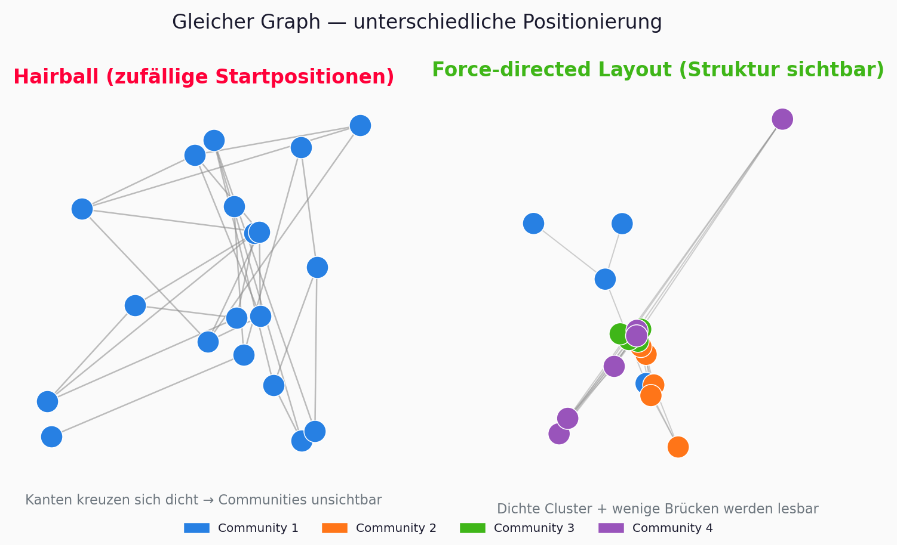
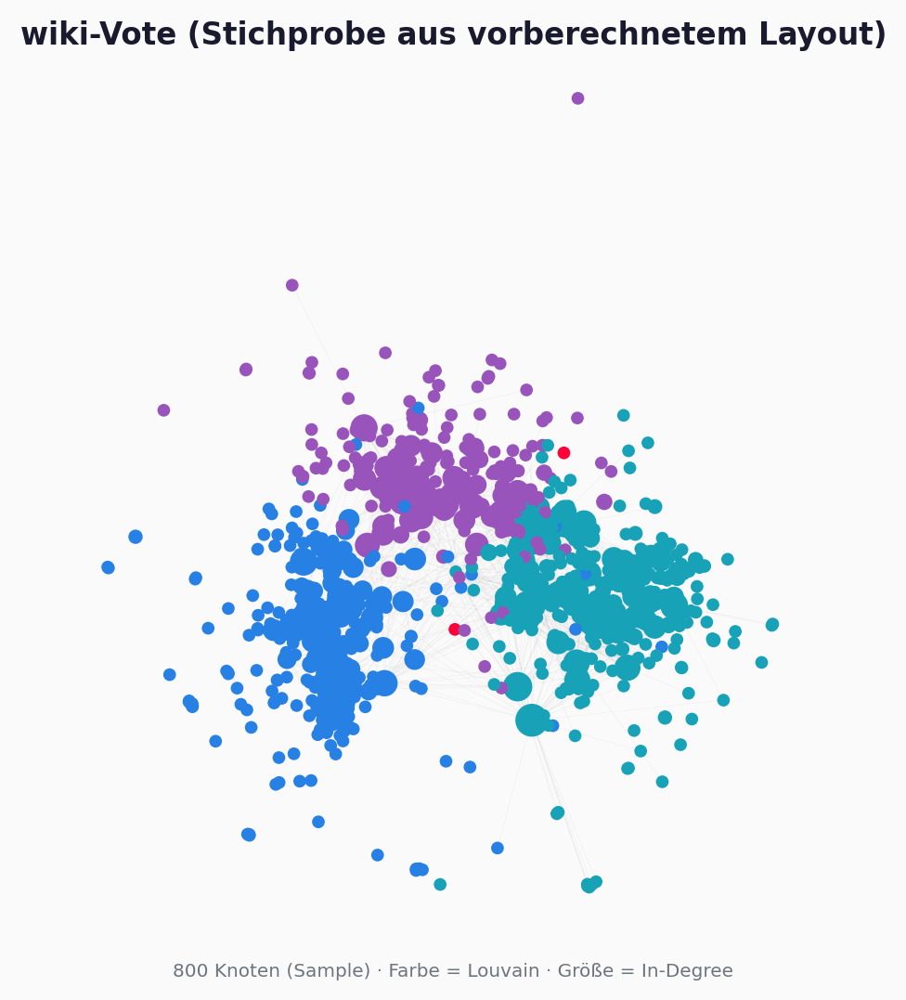
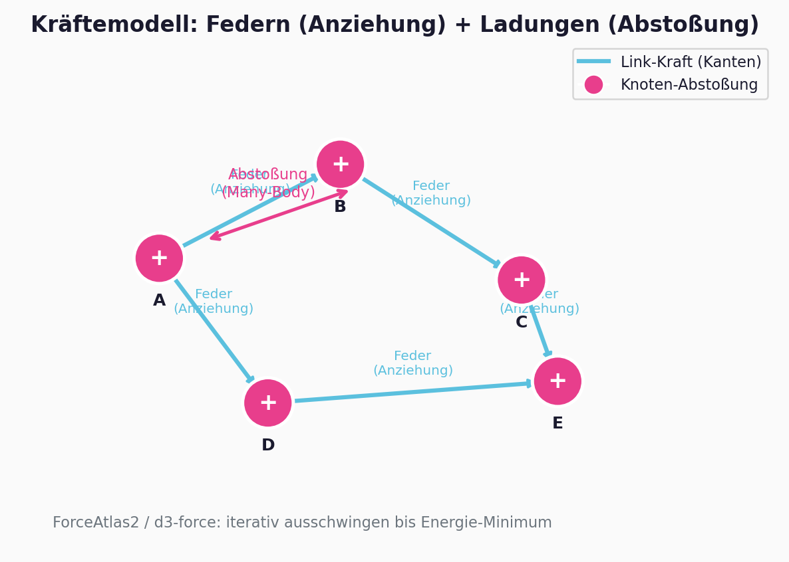
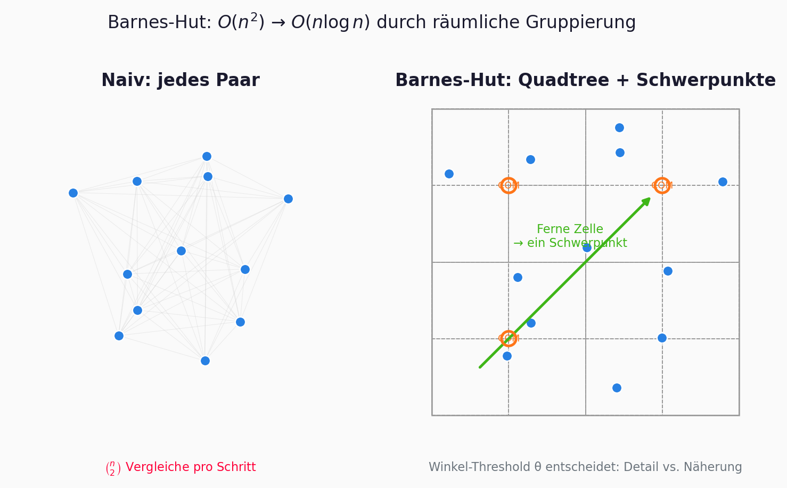
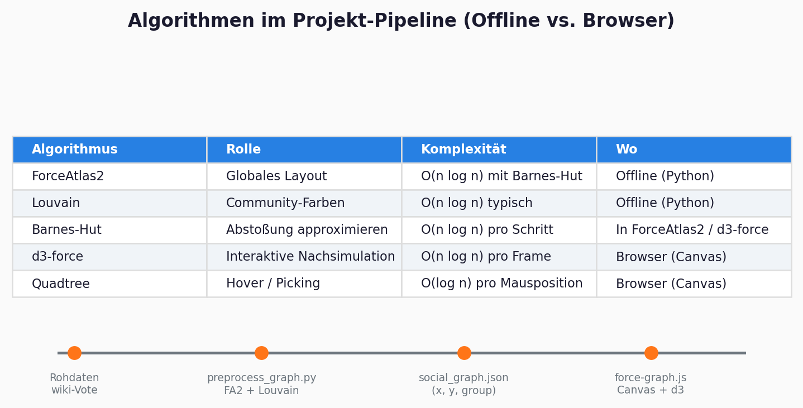
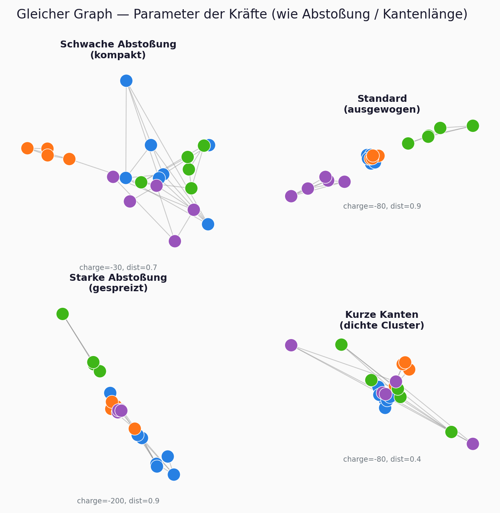
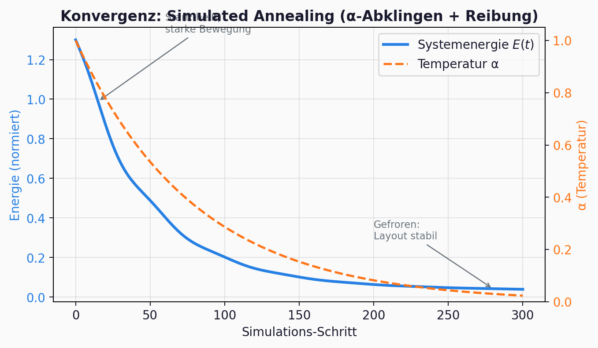
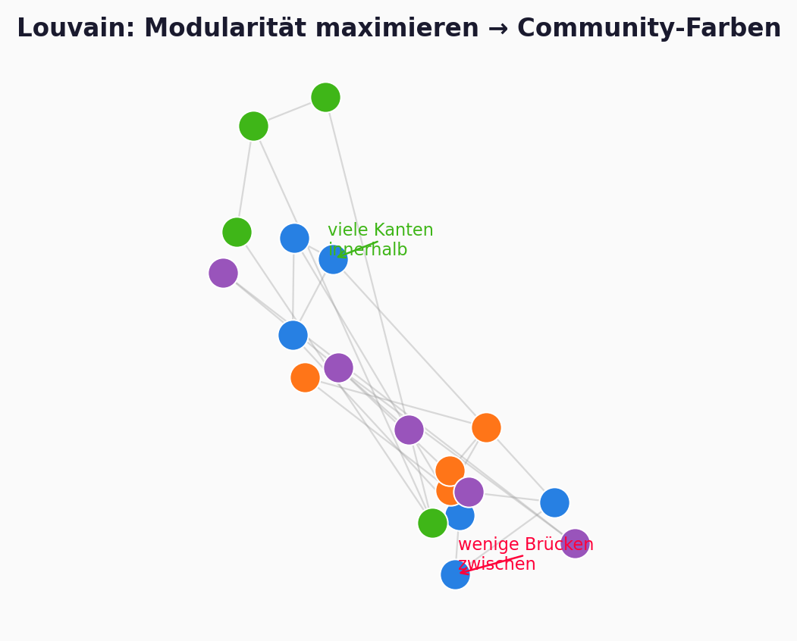
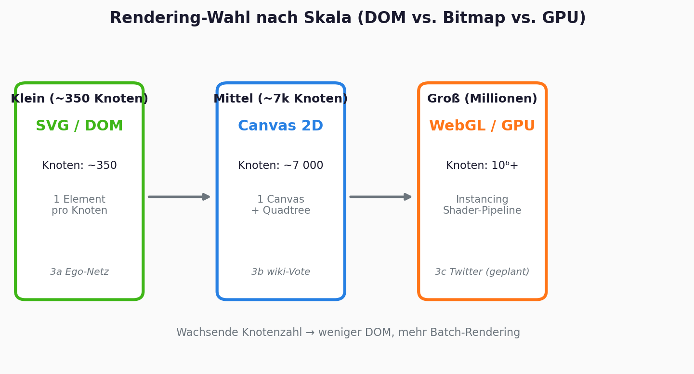
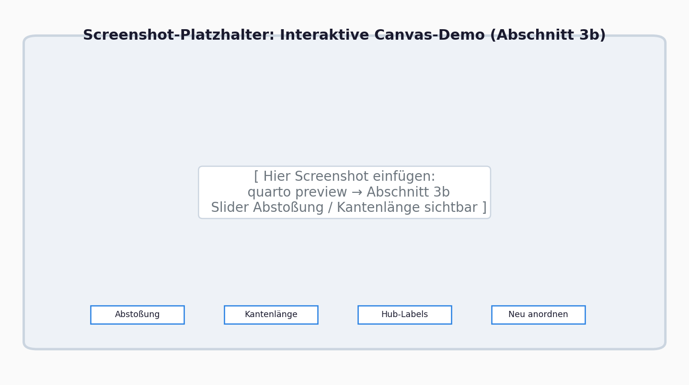

DEPRECATED - superseded by presentation.qmd (v2)
Presentation source (copy to presentation.qmd)
Rename or copy this file to presentation/presentation.qmd and add the YAML header below at the top.
---
title: "Nodale Graphdatenvisualisierung"
subtitle: "Layout-Algorithmen, Kraftmodelle und Web-Rendering"
author: "Sara, Silvia, Adam"
date: today
format:
revealjs:
theme: simple
slide-number: true
transition: slide
width: 1280
height: 720
footer: "Visual Computing · Vertiefung · HM München"
bibliography: ../references.bib
---Lernziele
Nach dieser Präsentation könnt ihr …
- erklären, warum große Graphen ohne Layout-Algorithmen unlesbar werden
- das Kraftmodell (Federn + Abstoßung) und die Barnes-Hut-Näherung skizzieren
- ForceAtlas2, Louvain und d3-force in eure Pipeline einordnen
- begründen, wann SVG, Canvas oder WebGL sinnvoll sind
Agenda (25 Min)
| Block | Inhalt |
|---|---|
| Problem & Motivation | Hairball, wiki-Vote |
| Brücke | Gestalt → Layout (1 Folie) |
| Kern | Kraftmodelle, Barnes-Hut, FA2, Louvain |
| Live-Demo | Interaktive Website (Abschnitt 3b) |
| Ausblick | Skalierung, Grenzen, Quiz |
Problem & Motivation
Wann wird ein Graph unlesbar?

Use-Case: Soziale Netzwerke
- Knoten = Akteure, Kanten = Beziehungen
- Ziel: Struktur sichtbar machen - Communities, Hubs, Brücken
- Beispiel: wiki-Vote (~7.000 Nutzer, ~100.000 Kanten, SNAP)

Entwicklungsgeschichte (Kurzüberblick)
| Jahr | Meilenstein |
|---|---|
| 1984 | Eades - Feder-Heuristik |
| 1991 | Fruchterman-Reingold |
| 1986 | Barnes-Hut |
| 2008 | Louvain |
| 2014 | ForceAtlas2 |
| heute | d3-force, Canvas, WebGL |
Brücke zur Vorlesung
Gestalt → Layout
Gesetz der Nähe (Vorlesung): Nahe Elemente = zusammengehörig.
Kraft-Layout: Algorithmen konstruieren diese Nähe durch Positionierung.
Kraftgerichtete Layouts
Graph als physikalisches System

- Attraktion entlang Kanten (Federn)
- Abstoßung zwischen allen Knoten
- Layout = Kräftegleichgewicht
Feder- und Abstoßungskräfte
\[F_{ij}^{\mathrm{attr}} = k \cdot (d_{ij} - l) \cdot \vec{u}_{ij}\]
\[F_{ij}^{\mathrm{rep}} = \frac{k_{\mathrm{rep}}}{d_{ij}^{2}} \cdot \frac{\mathbf{x}_i - \mathbf{x}_j}{d_{ij}}\]
Energie-Formulierung
\[E = \sum_{(i,j)\in E} \frac{k}{2}(d_{ij} - l)^2 + \sum_{i<j} \frac{k_{\mathrm{rep}}}{d_{ij}}\]
Referenz: Eades 1984, Fruchterman-Reingold 1991
FR vs. ForceAtlas2
| Aspekt | FR | FA2 |
|---|---|---|
| Abstoßung | \(O(n^2)\) | Barnes-Hut |
| Integration | Euler + \(T\) | Verlet + \(\alpha\) |
Barnes-Hut

\(\Theta\)-Kriterium: Zelle approximieren wenn \(w/d < \Theta\)
Pipeline

preprocess_graph.py → FA2 + Louvain → JSON → d3-force Canvas
Parameter-Effekte

Velocity-Verlet & alpha-Decay

Louvain & Hubs

\[Q = \frac{1}{2m} \sum_{ij} \left[ A_{ij} - \frac{k_i k_j}{2m} \right] \delta(c_i, c_j)\]
Skalierung
SVG → Canvas → WebGL

Live-Demo
Website Abschnitt 3b

Abschluss
Zusammenfassung
Physik simulieren · N-Körper approximieren · Communities färben · passend rendern
Quiz
- Warum Barnes-Hut?
- Was bedeutet hohes \(Q\)?
- Warum Canvas statt SVG?
- Was steuert \(\alpha\)?
Arbeitsaufteilung
Silvia | … |
Adam | … |